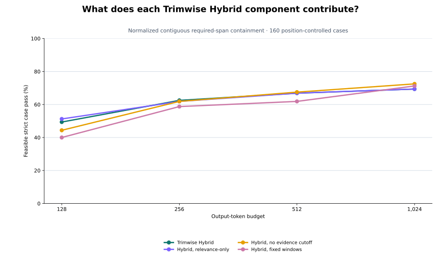

QUERY-AWARE COMPONENT STUDY
Each variant uses the same 160 sources, questions, budgets, encoder, lexical--semantic fusion, source-order reconstruction, strict source-span measure, and thermal-gated runtime. It changes exactly one mechanism: MMR becomes relevance-only, the adaptive evidence cutoff is removed, or Markdown-aware source segments become exact non-overlapping 128-token windows. No downstream LLM calls are included.

| Configuration | 128 | 256 | 512 | 1,024 |
|---|---|---|---|---|
| Trimwise Hybrid | 49.4% | 62.5% | 66.9% | 69.4% |
| Hybrid, relevance-only | 51.2% | 61.9% | 66.9% | 69.4% |
| Hybrid, no evidence cutoff | 44.4% | 61.9% | 67.5% | 72.5% |
| Hybrid, fixed windows | 40.0% | 58.8% | 61.9% | 71.2% |
Values are complete Hybrid minus the variant in percentage points; brackets are fixed-suite 95% paired bootstrap intervals. The 128-token results support the adaptive cutoff and structural segments on this suite. MMR has no consistent observed effect, and the higher-budget intervals do not distinguish the cutoff or fixed-window variants. This exploratory study does not establish universal component effects.
| Paired difference (percentage points) | 128 | 256 | 512 | 1,024 |
|---|---|---|---|---|
| Hybrid - Hybrid, relevance-only | -1.9 [-5.6, +1.9] | +0.6 [+0.0, +1.9] | +0.0 [+0.0, +0.0] | +0.0 [+0.0, +0.0] |
| Hybrid - Hybrid, no evidence cutoff | +5.0 [+1.9, +8.8] | +0.6 [-1.9, +3.1] | -0.6 [-5.6, +4.4] | -3.1 [-8.1, +1.9] |
| Hybrid - Hybrid, fixed windows | +9.4 [+1.2, +17.5] | +3.8 [-3.8, +11.9] | +5.0 [-1.9, +11.2] | -1.9 [-6.2, +1.9] |